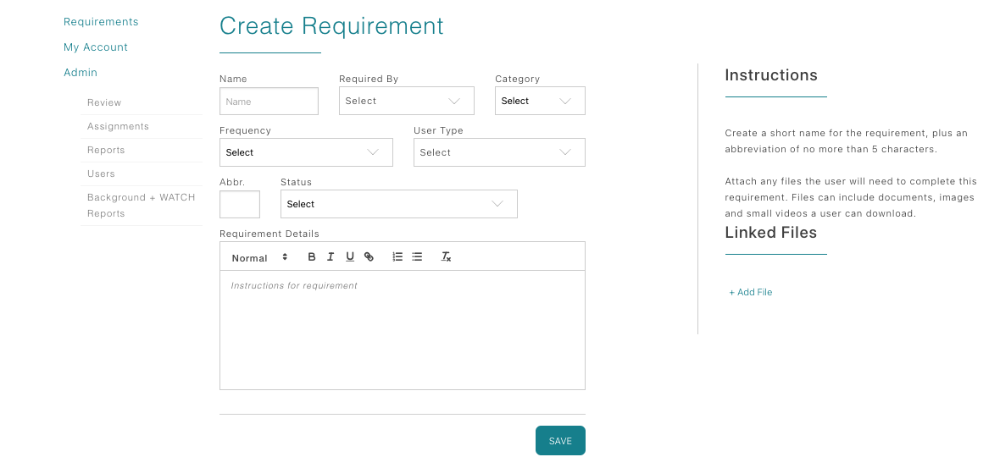

Review existing requirements
- On the Dashboard, click the Requirements link.
- The Requirements table lists each item you have already built, showing Name, Type, Frequency, Date Created, Status (Active/Inactive), and action buttons for Edit/Delete.
- If you need to edit or retire an item, use the buttons in this table. Otherwise, click Create Requirement above the grid to start fresh.
Complete the Create Requirement form
- Name: Enter the requirement title students/faculty will see.
- Required By: Select the schools/programs that must complete this requirement.
- Category: Choose the template that fits (Forms, Site Orientations, Insurance, or Licenses). Leave the sub-category blank when working in Education unless instructed otherwise.
- Frequency: Decide whether the requirement is due Annually or only Once.
- User Type: Target Faculty, Students, or both.
- Abbr: Provide a short code used on internal tables.
- Status: Set to Active to make it visible; leave as Inactive while drafting.
The right-hand panel lets you upload reference files students can download and includes a large text area for instructions. Use it to spell out exactly what proof or steps you expect.

Category-specific guidance
- Site Orientations: Informational only—users cannot upload documentation. Add text or downloadable orientation packets. Enable the “auto approve” checkbox if you want the requirement to mark complete as soon as the user clicks Save.
- Forms: Use when students must upload a document (e.g., signed PDF, driver’s license). Leave the sub-category blank.
- Insurance: For facilities that demand proof of liability coverage. Choose between Insurance verified by program (program supplies coverage) or Individual Insurance (user uploads policy + expiration date).
- Licenses: Ideal for faculty or graduate students with active healthcare licenses. After selecting Yes, capture license type, issuing state, number, expiration date, and optionally upload supporting files. Use + Add another license for multiple entries.
Publish and maintain
- Upload any reference documents students need to review before submitting.
- For Site Orientations or other auto-approved requirements, double-check the instructions field to ensure students understand the informational purpose.
- Switch the Status to Active only when you are ready for coordinators, students, or faculty to see the requirement. Inactive items remain hidden.
- Edit the requirement anytime from the main table; changes take effect immediately for anyone assigned to that program.